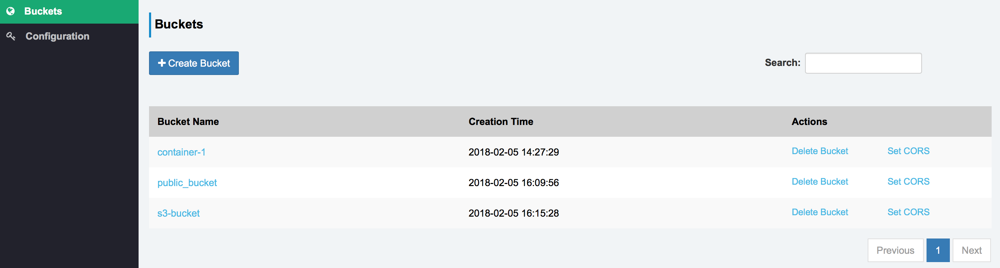

Module - 4 : Ceph Object Storage Provisioning#
Module Agenda
- In this module you will learn how to configure object storage using the Ceph RADOS Gateway (RGW) protocol
- You will then use Ceph for Object Storage over S3 and SWIFT APIs
- Finally, you will configure a Sree GUI S3 Browser to access Ceph Object Storage via the S3 API
- By the end of this module, you will have an understanding of Ceph Object Storage.
- From your workstation login to the
ceph-adminnode as userstudent(Learn how to Login)
ssh student@<IP Address of ceph-admin node>
Prerequisite
- This module is independent of the other modules. If you intend to follow this module, please make sure that you have a running Ceph cluster before you begin.
- You could setup a Ceph cluster using either of these two methods
1) Follow the hands-on instructions in Module-2 and deploy the Ceph cluster
2) Fromceph-adminnode, execute the following script to setup a Ceph cluster
sh /home/student/auto-pilot/setup_ceph_cluster.sh - Once you have a running Ceph cluster you will be ready to continue with this module.
- You must run all the commands using user
studenton theceph-adminnode, unless otherwise specified.
Introduction#
The Ceph object gateway, also know as the RADOS gateway (RGW), is an object storage interface built on top of the librados API to provide applications with a RESTful gateway to Ceph storage clusters.
To access Ceph over object storage interfaces i.e. via swift or s3 APIs, we need to configure Ceph RGW. In this module we will configure the ceph-admin node as Ceph RGW and verify s3 and swift client access from client-node1
Setting up Ceph Rados Gateway#
- Visit the
ceph-ansiblemain configuration directory
cd /usr/share/ceph-ansible/group_vars/
- In this directory you will find the
all.ymlconfiguration file which has already been pre-populated for you to avoid any typographical errors. Let’s review this file to better understand the Ceph RGW configuration parameters.
cat all.yml
all.ymlfile configures Ceph RGW for- Port
- Number of concurrent threads
- RGW interface
- RGW DNS name (required for s3 style bucket access)
... ... radosgw_civetweb_port: 80 radosgw_civetweb_num_threads: 512 radosgw_civetweb_options: "num_threads={{ radosgw_civetweb_num_threads }}" radosgw_interface: eth0 radosgw_dns_name: "ceph-admin" ... ...
- Add Ceph RGW host to your Ansible inventory file by editing the
/etc/ansible/hostsfile
sudo vim /etc/ansible/hosts
- Add the following section to your
/etc/ansible/hostsfile
[rgws] ceph-admin
- To start deploying Ceph RGW, switch your directory to the
ceph-ansibleroot
cd /usr/share/ceph-ansible
- Run the
ceph-ansibleplaybook and limit it torgw
time ansible-playbook site.yml --limit rgws
Tip
Ansible is idempotent. If it is run multiple times, it has the same effect as running it once. Therefore, there is no harm in running it again. Configuration changes will not take place after its initial application.
-
Once your Ansible playbook run has finished, ensure there are no failed items under
PLAY RECAP -
Allow user
studentto access the Ceph cluster
sudo chown -R student:student /etc/ceph
- Verify
ceph-radosgwservice is running onceph-admin. Also make note of the port number it’s running on. It must be on port 80.
sudo systemctl status ceph-radosgw@rgw.ceph-admin.service ; sudo netstat -plunt | grep -i rados ;
-
To use Ceph as an Object Storage cluster, we first need to create
S3andswiftusers -
Create a RGW user for
S3access
sudo radosgw-admin user create --uid='user1' --display-name='First User' --access-key='S3user1' --secret-key='S3user1key'
- Create RGW subuser for
swiftaccess
sudo radosgw-admin subuser create --uid='user1' --subuser='user1:swift' --secret-key='Swiftuser1key' --access=full
Success
At this point, you have Ceph RGW installed and configured, and you have created S3 and Swift users. In the next section, you will learn how to access Ceph object storage using S3 and Swift clients.
Access Ceph Object Storage using Swift API#
-
To save time,
python-swiftclientcli has already been installed onceph-adminnode -
Using Swift CLI, create a swift container (aka bucket) named
container-1and then list it
swift -A http://ceph-admin/auth/1.0 -U user1:swift -K 'Swiftuser1key' post container-1 ;
swift -A http://ceph-admin/auth/1.0 -U user1:swift -K 'Swiftuser1key' list
- Create a dummy file and then upload it to
container-1using swift
cd /tmp ; base64 /dev/urandom | head -c 10000000 > dummy_file1.txt ;
swift -A http://ceph-admin/auth/1.0 -U user1:swift -K 'Swiftuser1key' upload container-1 dummy_file1.txt
- List
container-1to verify the file is stored
swift -A http://ceph-admin/auth/1.0 -U user1:swift -K 'Swiftuser1key' list container-1;
Success
Easy, right? So you have just learned how to use Ceph for Object Storage using swift APIs.
Access Ceph Object Storage using S3 API#
The Ceph object storage cluster can be accessed by any client that supports S3 API access. In this section we will use s3cmd which has already been installed on the ceph-admin node.
-
To use Ceph with S3-style subdomains (e.g., bucket-name.domain-name.com), you need to add a wildcard to the DNS record of the DNS server you use with the ceph-radosgw daemon. We will rely on
dnsmasqwhich is a lightweight DNS server and has already been installed and configured on theceph-adminnode -
Next, we shall configure
s3cmdonceph-adminnode
s3cmd --access_key=S3user1 --secret_key=S3user1key --no-ssl --host=ceph-admin --host-bucket="%(bucket)s.ceph-admin" --dump-config > /home/student/.s3cfg
- Test Ceph object storage via S3 protocol by listing buckets using
s3cmd. It should list buckets that you have created usingswiftin the last section
s3cmd ls
- Create a new bucket and list
s3cmd mb s3://s3-bucket ;
s3cmd ls
- Create a dummy file and upload to
s3-bucketvia S3 API
cd /tmp ; base64 /dev/urandom | head -c 10000000 > dummy_file2.txt ;
s3cmd put dummy_file2.txt s3://s3-bucket ;
s3cmd ls s3://s3-bucket
- Now, create a publicly accessible Ceph S3 bucket
s3cmd mb s3://public_bucket --acl-public
- Add content (Image File) to the S3 public bucket
s3cmd put --acl-public /home/student/Red_Hat_Tower.jpg s3://public_bucket
- Add content (Video File) to the S3 public bucket
s3cmd put --acl-public /home/student/Red_Hat_Ceph_Storage.mp4 s3://public_bucket
-
Next, let’s view this public content directly from your browser
-
To view the image file, update the following URL with the public IP address of your
ceph-adminnode and copy this to your browser
http://<Public_IP_of_Ceph_Admin_Node>/public_bucket/Red_Hat_Tower.jpg
- To stream video directly from Ceph S3 public bucket, again, update the URL below with the public IP address of your
ceph-adminnode and copy the result to your browser
http://<Public_IP_of_Ceph_Admin_Node>/public_bucket/Red_Hat_Ceph_Storage.mp4
-
Finally, let’s use an Open Source object storage GUI browser, Sree, to access Ceph Object Storage using the S3 API. For simplicity, Sree has been configured on your
ceph-adminnode and is running on port5000. -
To open the Sree Object Storage browser, update the following URL with your
ceph-adminnode’s public IP addresss and point your browser to
http://<Public_IP_of_Ceph_Admin_Node>:5000
- Let’s configure Sree to access Ceph S3 by providing the following details in the configuration section (as shown in the screen shot)
Ceph S3 Endpoint : http://<Public_IP_of_Ceph_Admin_Node> Access Key ID : S3user1 Access Key ID : S3user1key

- Once you have Sree configured with Ceph S3 endpoints and keys, click on the buckets section to list/create new buckets from the Sree object storage browser

Note
Browsing buckets upon which Cross-Origin Resource Sharing (CORS) has not been set could result in a “Network Error”. To avoid such errors, set CORS on the bucket either through the Sree web interface or the S3cmd CLI. It’s worth noting that buckets created through the Sree web interface have CORS set by default and are browsable. Learn more about CORS.
- Let’s create a new bucket,
sree-bucket, from the Sree Object Storage browser

End of Module
We have reached the end of Module-4. In this module, you have learned to use the Ceph cluster for object storage using S3 and Swift APIs. In the next module, you will learn to use Ceph storage as a distributed file system.